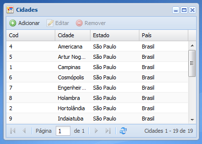

Tela de cadastro de cidades
Essa é a tela de cadastro de cidades, nela é possível adicionar novas cidades ainda não cadastradas no sistema, que serão utilizados em diversos outros cadastros do sistema.
